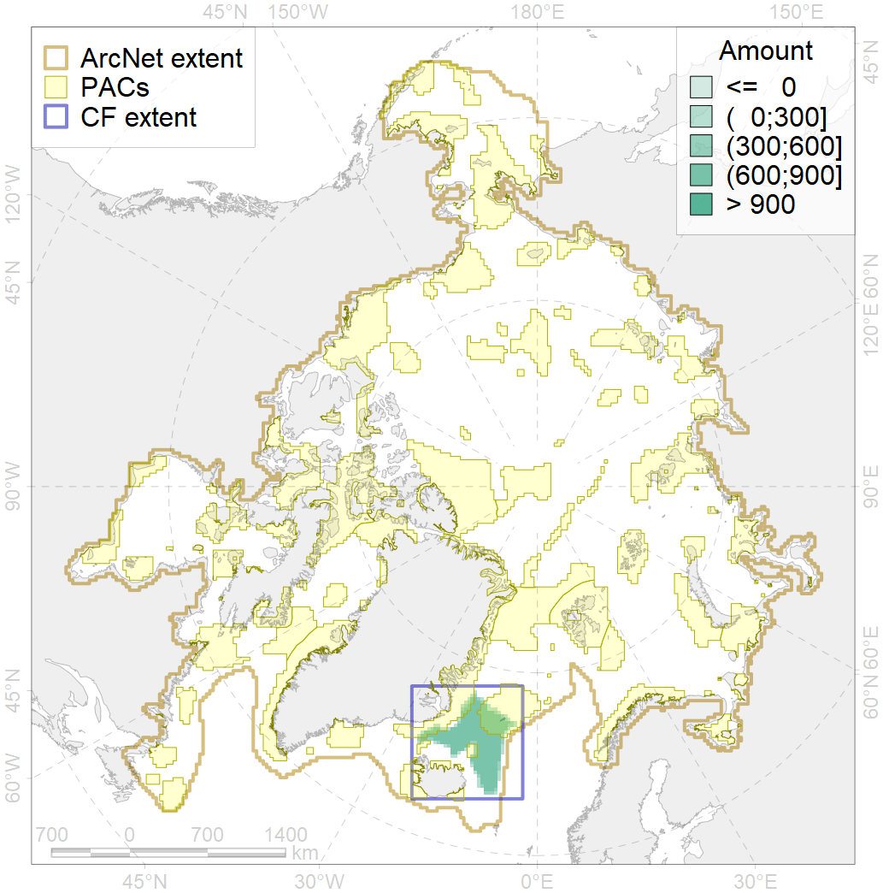
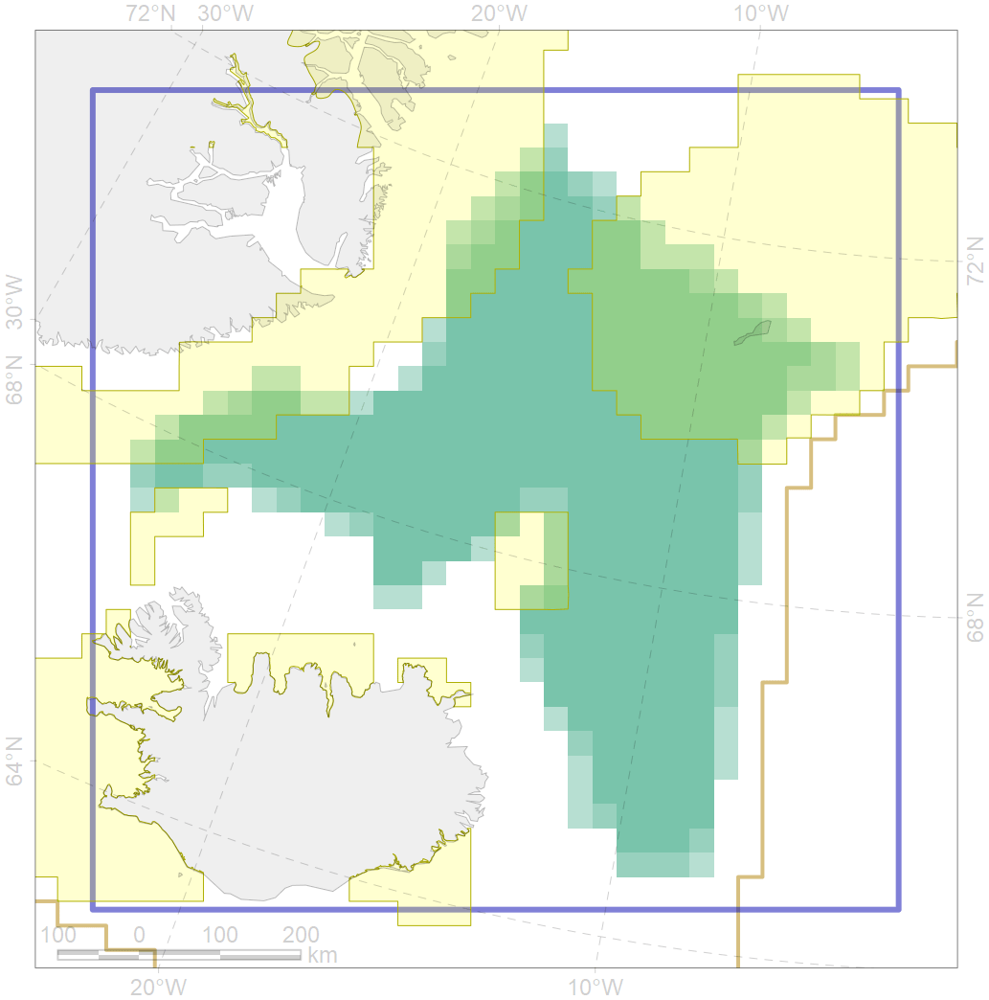

7184

| CF code | 7184 |
| CF name | VI.1. Greenland Sea and Fram Strait Basin rises VI.1.1. Plateaus |
| Time Period | At least last 100 years |
| Source(s) | Harris et al., 2014; Carmack, Wassmann, 2006 |
| Seasonality | 1-12 |
| Depth Horizon | Sea floor |
| Methodology | Data obtained from the literature |
| Use Restrictions | Open access |
| Author Name | V. Spiridonov, W. Merritt |
| Notes | |
| Scenario’s Target | 0.1149906 |
| Target Achievement | 0.297 (Scenario: 258.6%) |
| PAC | Share of the Total Amount within the PAC | Share of the Target Achievement for the ArcNet | PAC’s Contribution to the Target Achievement |
|---|---|---|---|
| 32 | 6.2%6.2% | 40.1%40.1% | 15.5%15.5% |
| 34 | 17.9%18.7% | 134.8%136.5% | 52.1%52.8% |
| 36 | 1.0%1.7% | 5.6%7.0% | 2.2%2.7% |
| 37 | 0.0%0.0% | 0.0%0.0% | 0.0%0.0% |
| inner | 25.0%26.5% | 180.5%183.7% | 69.8%71.0% |
| outer | 75.0%76.6% | 78.1%87.0% | 30.2%33.7% |
| † supplement values are for area consistence whereas principal values are for Accenter compatible gridded stats |